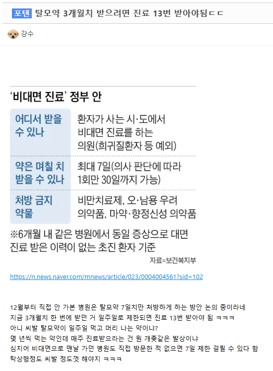

탈모약 3개월치 받으려면 진료 13번 받아야됨ㄷㄷ
댓글
오는 12월 24일부터 비대면 진료 시 ‘초진(初診) 환자’는 원칙적으로 환자 주소지와 같은 시·도에 있는 의원급 의료기관에서만 진료를 받을 수 있을 것으로 보인다. 약도 7일 치까지만 처방받을 수 있고, 예외적으로 1회에 한해서만 최대 30일 치를 받을 수 있다
병원가서 진료받는거말고 딸깍비대면만 제한하는거같은데 이걸로 향정신성약품사셔 암거래하는애들때문인거아님?
저런새끼들은 저지랄로 나라욕하고 저걸로 약물뚫리면 그걸로도 나라욕함 ㅋㅋ 걍병신
저러니까 머리빠지지
너무해 ㅋㅋㅋㅋㅋㅋ
비대면 진료를 '가던' 이라고 표현을 하는것도 신기하네
6개월 내 같은 병원에서 동일 증상으로 대면 진료 받은 이력이 없는 초진 환자 기준
이게 말이 어렵나?
먹는다고 다시 자라는것도 아닌데 왜 먹음?
지랄났네
초진에 비대면이라 그런거아님? 의약품 마약처럼 쓰는애들때문에 더 심해진듯
쟤는 뭐 지가 올린 사진도 안읽어보는건가
대면은 하는게 좋지
걍 맘편히 직구함
ㅅㅂ 됐고 탈모약 건보료 적용시켜줘!!
존나비싸
3달에 2만원 안이면 싸지않냐
엥 진짜?
나 7년전에 처음으로 구매했을 때 프로페시아 3개월치 5만원 했는데 더 낮아짐? 굿
요즘에 경쟁 존나 붙어서 카피약 진짜 싸짐ㅇㅇ
3개월 5만원도 싼거지. 그런 구두쇠 마인드니깐 대머리 된거야
ㅋㅋㅋㅋㅋㅋㅋㅋ 대머리쉑 이렇게 정보력이 느려서야 넌 탈모로 우수수 다 빠져도 할 말 없다 쉑이야!!!
싼 곳가면 3개월에 15000원도 있더라 나 2주전에 18000원에 삼.
“비대면으로 맨날 가던 병원” 이게 뭔 말이여
걍 깔려고 하다보니깐 나오는 헛소리지
여드름약 탈모약 같은거면 비대면이 좋긴한데
진료비 3천원에 3달치 내가 원하는 제일 싼 약국가서 타면되서
일본인이나 중국은 집 앞까지 약이 배송 온다는데 ㄹㅇ임?
저렇게되면 처방전값만 늘어나는건데 대면가면되자너억까자너 이지랄 지잡저능아 탈모충 수준 ㅋㅋ
0
개소리로 선동하는 똥글
비대면 장점인 처방비하락 없어지는건데 이런저능아들덕분에 규제계속생기고 의사만 노남 ㅋ
초진 뜻을 모르노
이 새끼들 버젓이 초진 기준이라고 적혀있는데도 저러고 있음 ㅋㅋ
댓글이 자기 원하는대로 안달려서 삭제하고 다시 올리려나? ㅋㅋㅋ
열심히 원하는 방향으로 달아주는 병신 하나 있는 것 같아서 안그럴지도?
그냥 가서 진료받고 약타면되잖아...
이런애들이 비대면진료 유통업자한테 건보재정 뜯기는거 모르고 나중가서 건보재정 모자라니 뭐니 한탄함ㄹㅇ
근데 저렇게 해버리면 비대면 업자들이 7일에 한번씩 더 뜯어가는거 아님?
오히려 의사들 배 불려줄라고 바꾸는거 같아 보이는데
사람마다 입장마다 관점이 다 다르겠지만, 저 정책이 되려 7일마다 1건씩 비대면 진료/약배송을 키울것이라는 상황이 이루어지면, 비대면 업자들이 수익으로는 더 뜯어간다고 볼 수 있을것같아.
근데 7일로 제한하면, 원글 쓴 애처럼 환자들은 불편해서라도 비대면보단 대면을 선호하게되고 그럼 비대면 플랫폼에는 수익 악화로 이어질 가능성 있음.
그리고 그나마 7일 허용한것도 굉장히 제한적인 환자만을 대상으로 하는거라 기존 일수제한을 기대하고 사업벌였던 비대면 플랫폼의 예상수익보단 적을수도있어보임.
개인적으로도 굳이 얘네를 껴서 건보재정 더 줄줄세게할 필요가 있나싶다. 미국처럼 땅덩어리넓어서 약국이나 병원가려면 1시간 차타고 가야하는것도 아닌데 굳이 잘사먹던 배달업에 쿠팡끼고나서부터 비용올라간걸 보듯이 똑같은 상황이 될듯함
애초에 초진기준임
초진 아니면 신경쓸 필요 없음
초진환자기준이잖아
한번이라도 가면 초진이 아니라서 7일마다 갈 필요가 없어
이새끼는 대놓고 선동글이랑 바이럴 올리는게 너무 보이는데 차단 못먹이나
엥 내 처남 외국인이라서 그런가 한국갈때마다 1년치받아오던데
대면으로 그렇게 됨
본문은 비대면
탈모약은 어느 병원 가서 어느 약으로 받는게 좋음?
요즘 머리도 엄청 빠지고 끊어지고 머리가 휑함
종로5가 오면 6개월 1년치씩 처방해줌 약도 제일 쌈
그냥 인도에서 사라
중국 일본이랑 반대로 가는 대한민국 행정
언제부터 우리나라 행정이 중국 일본이랑 같이가야됐음? ㅋㅋㅋㅋ
약사회는 이번 개정안에 재진 비대면진료의 처방일수 상한이 마련되지 않았다며 1회 최대 60일로 명시해야 한다고 주장했다. 반면 원산협은 환자의 진료 이력과 의사의 의학적 판단에 따라 적절한 처방일수를 결정할 수 있도록 해야 한다는 입장이다.
초진만 7일 제한이고, 그 다음부터는 제한 없음.
어차피 선동용인걸 ㅋㅋㅋ
본문에 떡하니 초진일때만이라고 적혀있는데도
ㅋㅋ돈이라도 쳐먹고 선동하는거지?
이새끼 ai로 올린거같은데 검수안하나